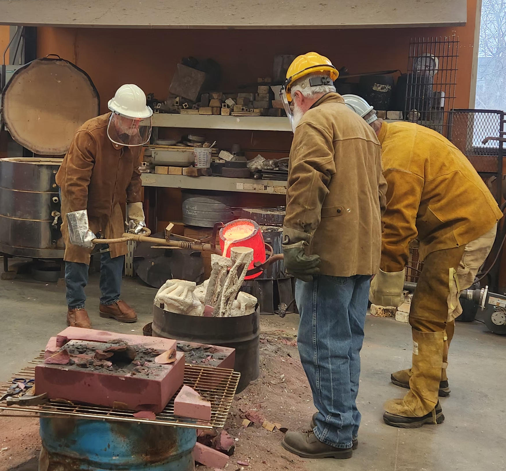

Casting metal takes careful planning and doing many small, patient steps in the right order.


When I create three-dimensional art, the core of my practice centers on the demanding physical work, the texture of the materials, and the fascination of watching them change form. I take raw elements from nature—steel, stone, and clay—and use my own hands to shape them into unique pieces of art through patient, intentional labor.
Hard, heavy, and built to endure, steel and stone have always served as my primary mediums. I enjoy combining their contrasting textures to explore themes of strength, permanence, and organic form. While much of my initial inspiration comes from the traditional techniques of European and American blacksmiths, I also use these materials to tell stories about human resilience and the bonds that keep communities strong together.
Alongside metal and stone, I create functional pottery and clay sculptures using traditional studio methods. I work extensively with rich, dark Tenmoku glazes, balancing their predictable depths against the wild and completely unique surfaces produced in a wood-burning kiln. My Moon jars are deeply inspired by historic Korean pottery traditions; they represent an intense physical challenge on the wheel but offer a beautiful rewards when completed.
Casting metal takes careful planning and doing many small, patient steps in the right order.

Together, these studio logs show the actual hard work and techniques behind every single piece. To discuss commission details or potential collaborations, feel free to reach out through the contact form.